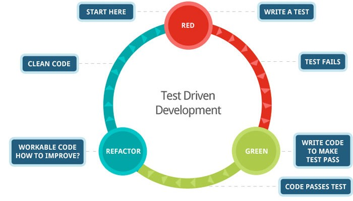

TDD
(Test-Driven Development)
¿QUE ES TDD?
El test-driven development es una metodología de diseño de software que se basa en test o pruebas para guiar el proceso. Al contrario de lo que ocurre en metodologías que posponen los test a un punto ulterior, los casos de prueba en TDD se realizan al inicio del proceso de diseñoUN POCO DE HISTORIA

El TDD fue desarrollado por Kent Beck a finales de la década de los 90 y forma parte de la metodología extreme programming.
Ventajas
- El software resultante es de alta calidad y tiene menos bugs.
- La arquitectura del sistema y el código productivo son fáciles de comprender y están bien estructurados.
- La identificación de fallos es rápida y el trabajo de mantenimiento se reduce.
- La eliminación de redundancias en el código evita el overengineering, es decir, la complejidad innecesaria del producto.
Inconvenientes
- Requiere conocimientos previos de codificación y mayor tiempo de aprendizaje.
- Solo comprueba la adecuación del código, no la funcionalidad del software.
- En algunos casos ha de ir acompañado de otros métodos de prueba.
Limitaciones
- Interfaces Gráfica de usuario (GUIs), aunque hay soluciones parciales propuestas.
- Objetos distribuidos, aunque los objetos simulados (MockObjects) pueden ayudar.
- Bases de datos. Hacer pruebas de código que trabaja con base de datos es complejo. Todo esto hace que la prueba sea costosa de codificar, aparte de tener disponible una base de datos que se pueda modificar libremente. Además, la prueba puede tardar demasiado en ejecutarse.
Las tres leyes del tdd
- No escribirás código de producción sin antes escribir un test que falle.
- No escribirás más de un test unitario suficiente para fallar (y no compilar es fallar).
- No escribirás más código del necesario para hacer pasar el test.
Ciclo Red-GREEN-REFACTOR
Estrategias de implementación, de rojo a verde
Implementación falsa
Triangular
Implementación obvia
Go to example...
Tangamandapio city
El alcalde de Tangamandapio, pensando en el pueblo, ha definido las siguientes reglas para calcular cuanto tienen que pagar de impuesto salarial los trabajadores de la ciudad, las reglas son las siguientes:
Reglas
- Sí el salario es igual o esta por debajo de $500 y tiene 60 o mas años debe pagar solo un 5% de impuestos base
- Sí el salario es mayor $500 y menor o igual a $2.000, y su edad es igual o mayor a 18 años y menor o igual a 40 años, debe pagar solo un 30% de impuestos base
- Sí el trabajador es mayor de 40 años y menor 60 años tiene que pagar un 10% de impuestos menos del impuesto base
- Sí es amigo del alcalde, el impuesto base es 0%
- Para todos los demás trabajadores el impuesto base es del 40%